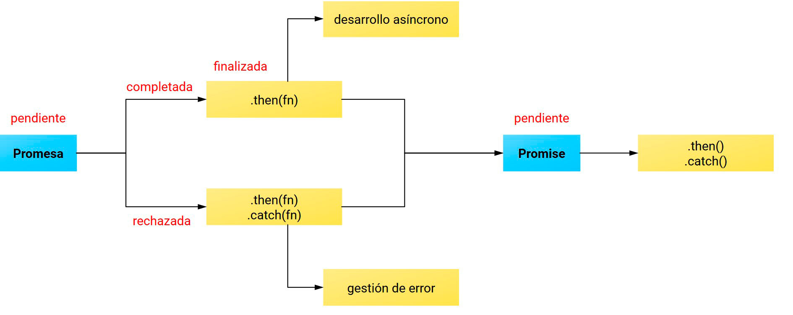
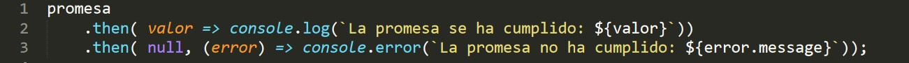
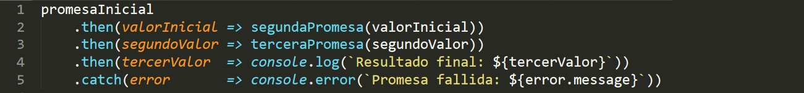
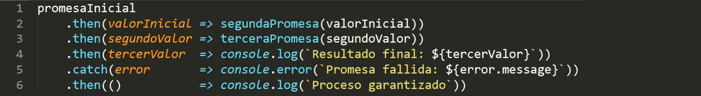

Introducción
- Formular consultas contra APIs propias o de terceros durante el transcurso de una aplicación supone registrar procesos, en su mayoría asíncronos, cuya gestión era asumida a través de complejas estructuras de callbacks.
- El objeto global Promise (ES6) simplifica esta gestión, encapsulando una operación asíncrona que será resuelta a futuro y que podrá derivar tanto en el valor fruto de su consecución como en el error de un eventual fracaso.
- El objeto devuelto es una Promesa consumida mediante un juego de métodos callback ejecutados según un sistema de estados a través de los que se desarrolla la Promesa.
- El diseño de este consumo permite planificar la respuesta de la aplicación frente a cada una de sus posibles resoluciones.
Consumo 
- Consumir una Promesa supone planificar el comportamiento de la aplicación frente a un futuro estado completado o rechazado de la Promesa.
- Esto se realiza mediante el objeto Promise que será retornado una vez quede finalizada.

- El método
then() se ejecuta tras un cambio de estado en la Promesa, retornando una nueva promesa y controlando así el flujo de datos.
then() recibe dos funciones en forma de parámetros opcionales:
- Función de éxito que recibe el valor argumentado en la función
resolve() de la Promesa.
- Función de rechazo que recibe el valor argumentado en la función
reject() de la Promesa.

- Existen alternativas para el callback que gestiona un rechazo en la Promesa:
- Concatenando un método
then() adicional que tome null como primer argumento.

- Delegando el rechazo en el método
catch(), que retorna igualmente una promesa.

Concatenación
- Es posible diseñar cadenas de diversas Promesas concatenadas que colaboren asumiendo tareas secuenciales y dependientes entre sí.
- La concatenación de métodos
then() permite diseñar procesos thenables de aspecto lineal.

- El comportamiento frente a una eventual excepción o un rechazo de cualquiera de las Promesas involucradas supone:
- Omitir el procesamiento de los sucesivos métodos
then() presentes en la secuencia.
- Si lo hubiera, procesar el primer método
catch() presente en la secuencia.
- Si los hubiera, procesar los sucesivos métodos
then() presentes en la secuencia.

FYI
-
- Una Promesa solo puede alcanzar el estado finalizado una vez, bien haya sido completada o rechazada, siendo el valor retornado por esta inmutable.
- Las Promesas se ejecutan de manera no bloqueante: su presencia en el flujo de ejecución no supone detenerlo hasta que sean resueltas.
- Consumir Promesas a través de funciones que retornan objetos Promise da lugar a procesos thenables de alta legibilidad, mantenibilidad, escalabilidad, modularización e identificabilidad.
- El rechazo de una Promesa debe generar, preferiblemente, un error en tiempo de ejecución
Error() permitiendo así el uso de herramientas de depuración.
- El callback
catch() para gestionar Promesas rechazadas no es más que edulcorante sintáctico para then(undefined, func), pero permite crear cadenas complejas de Promesas que deriven en un comportamiento u otro según la secuencia en la que resulten rechazadas.
- Además del rechazo explícito mediante
reject(), una excepción en cualquier punto del constructor o de sus callbacks supondrá su rechazo implícito.
- La gestión de procesos asíncronos dependientes en ES5 suponía transferir callbacks a funciones dando lugar a complejas arquitecturas (callback hells), mientras que la simplicidad de las Promesas reside en asociar los callbacks al propio objeto retornado. Controlar procesos asíncronos a través de arquitecturas thenables da lugar a un código de aspecto sincrónico y simplificado donde apenas se observa identación.
ES7
- ES7 integra dos alternativas ausentes de callbacks para la gestión de Promesas dando lugar a sistemas que se asemejan a una combinación de generadores y promesas.
- Funciones asíncronas:
- Precedidas por la palabra reservada
async en su declaración, retornan una Promesa.
- Cuando la función asíncrona retorna un valor, la Promisa se resolverá con el valor devuelto.
- Cuando la función asíncrona retorna una excepción o error, la Promesa se rechazará con el valor devuelto.
- Es posible definir funciones asíncronas a través de una expresión de función.
- Operador
await:
- Válido en el interior de funciones asíncronas, preceden a una Promesa pausando la ejecución de la función hasta su resolución.
- Una vez resuelta la Promesa adopta el valor retornado por esta reanudando la ejecución de la función.